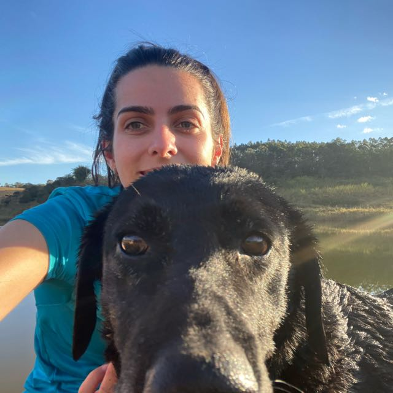

Divinópolis é uma cidade média de nível superior localizada na região Centro-Oeste peri-metropolitana de Belo Horizonte, Minas Gerais. A cidade é sede de uma das unidades descentralizadas do CEFET-MG. O campus da instituição, por estar situado em uma cidade-polo na região, recebe alunos de diversas outras cidades, alguns deles optam por residir na cidade, enquanto outros realizam o deslocamento pendular entre suas cidades de origem e Divinópolis todos os dias para estudar. Porém, com a pandemia de COVID-19 e o período de ensino remoto emergencial, essa dinâmica de migração humana pode ter sido afetada em parte, principalmente pela evasão escolar.
Nesse sentido, o trabalho objetiva utilizar ferramentas de geoprocessamento para espacializar a origem dos alunos e retratar de forma visual a participação do CEFET-MG na polaridade regional da cidade de Divinópolis. Além de levantar dados sobre a evasão escolar na unidade, o trabalho também visa promover uma análise da capacidade de divulgação e destaque que a instituição possui na região, com políticas de ações afirmativas e análise de replanejamento das linhas urbanas de transporte público intraurbano e atender às áreas mais periféricas da cidade.
A pesquisa está em constante andamento e mudança na relação dos dados, uma vez que a cada início de novo ano letivo novos alunos de diversas localidades distintas ingressam na instituição. Os métodos de obtenção de dados são realizados através de um questionário disponível para preenchimento por parte dos alunos. Esse formulário está disponível na plataforma e qualquer aluno da instituição com seu número de matrícula poderá respondê-lo para contribuir com a pesquisa. Os dados fornecidos são então manipulados e transformados em gráficos e mapas interativos presentes na plataforma para uma melhor compreensão visual.
ORGANIZADORES
Nádia Cristina da Silva Machado Gontijo, a orientadora do projeto. Professora e doutora em geografia no CEFET-MG do Campus de Divinópolis.

Paula Resende Santos, coorientadora do projeto. Professora e doutora em Geografia Física da Universidade de São Paulo(USP).
Alisson Marques da Silva, segundo coorientador do projeto. Professor e doutor do curso de graduação em engenharia da computação no CEFET-MG.
Lívia Sales Fonseca, estudante do CEFET-MG no curso técnico integrado em informática.
Arthur Nardy Souza, estudante do CEFET-MG no curso técnico integrado em informática.
Carlos Eduardo Machado Gontijo, ex-estudante do CEFET-MG referente ao curso técnico integrado em informática.